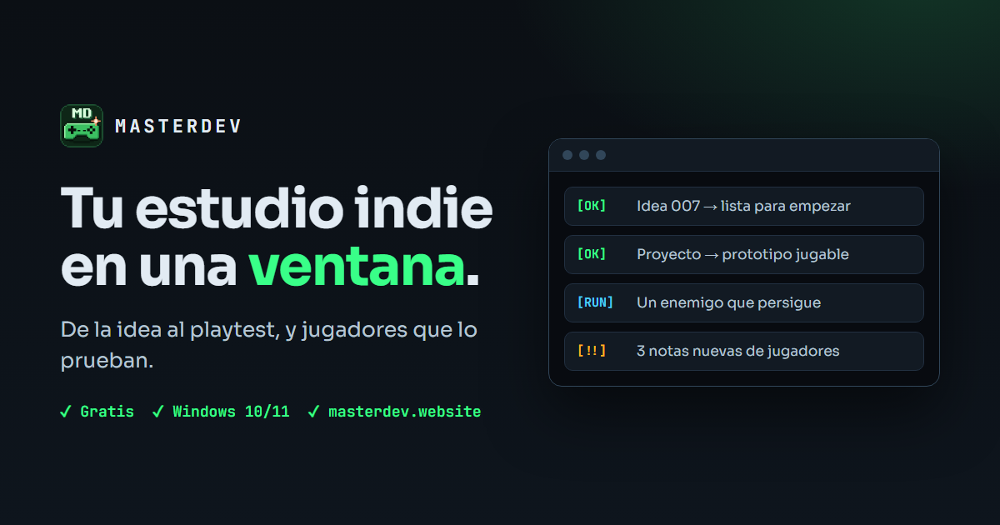
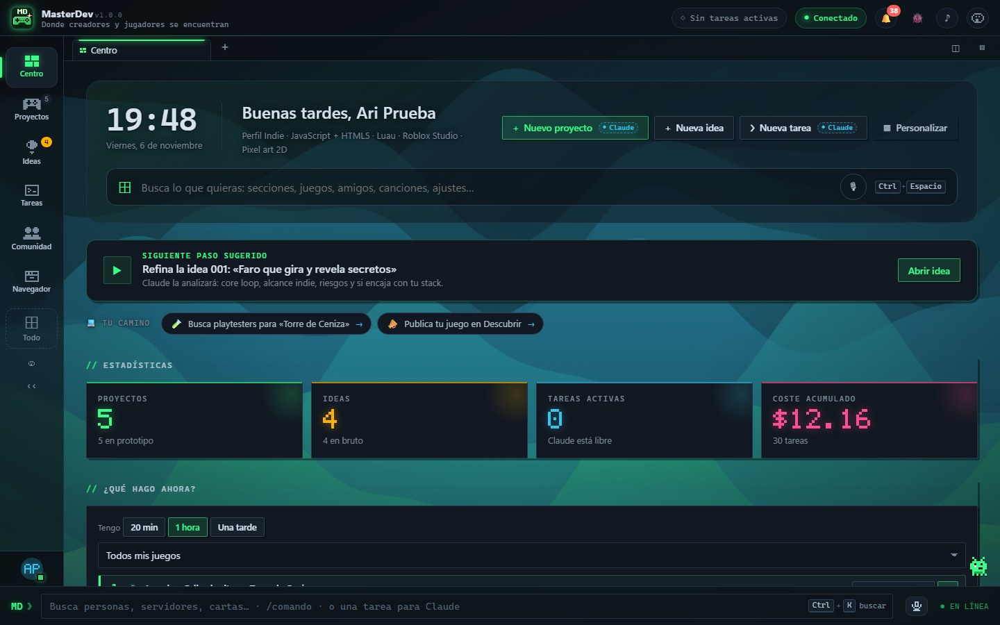
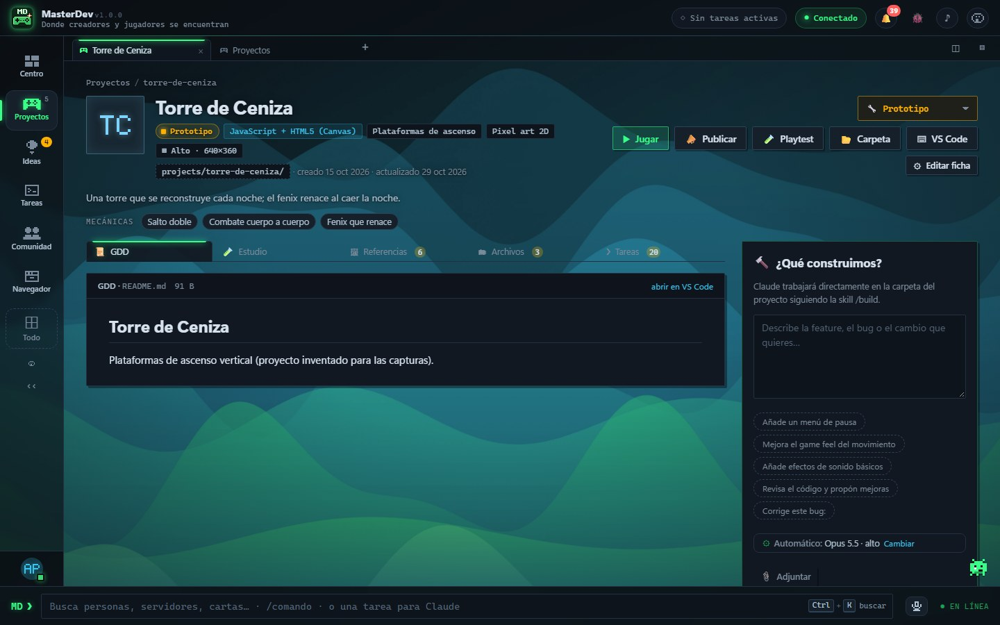
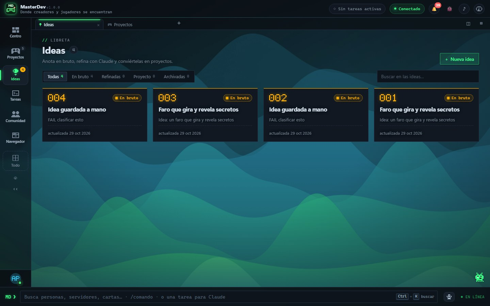
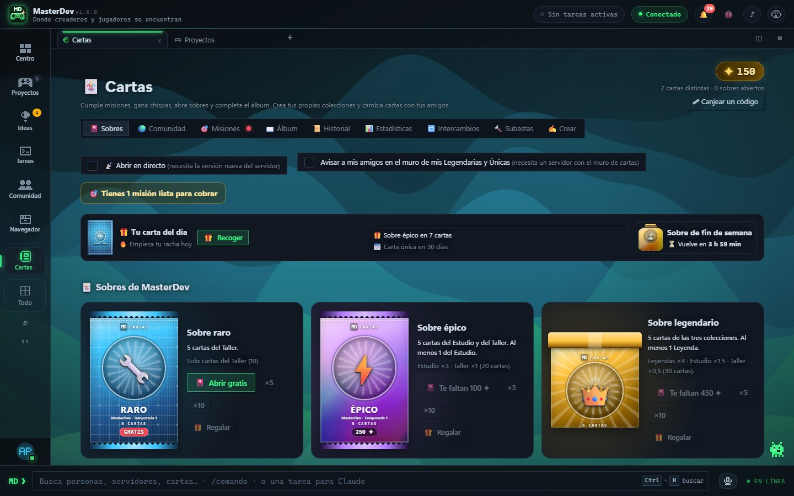

Prensa
Kit de prensa
Todo lo que necesitas para escribir o hacer un vídeo sobre MasterDev. Puedes usar estos textos e imágenes libremente para hablar de la app.
- Nombre
- MasterDev
- Qué es
- App de escritorio para crear juegos indie y comunidad para jugarlos y probarlos
- Plataforma
- Windows 10 / 11 · 64 bits
- Precio
- Gratis
- Primera versión pública
- 1.0.0 · 5 de noviembre de 2026
- Idiomas
- Español e inglés
- Web
- masterdev.website
- Contacto
- GitHub (issues)
Descripción corta
MasterDev es una app gratis para Windows donde organizas tu juego indie de la idea al playtest, y donde otros jugadores lo prueban.
Descripción larga
MasterDev reúne en una sola ventana lo que un desarrollador indie suele tener repartido: una libreta de ideas, proyectos en cualquier motor con su documento de diseño y un código que ya arranca, un estudio para cada juego con tareas, bugs, balance y devlog, y una conexión directa con Roblox Studio. Para los jugadores, ofrece un escaparate de juegos de desarrolladores reales, playtests con notas y encuestas, cartas coleccionables y una comunidad de amigos. Con Claude Code, de forma opcional, puede encargar trabajo de verdad sobre el código. Tus proyectos se quedan en tu PC.
Logotipo y capturas
Clic derecho › «Guardar imagen como…» para descargarlas. Las capturas usan una cuenta y proyectos inventados.




